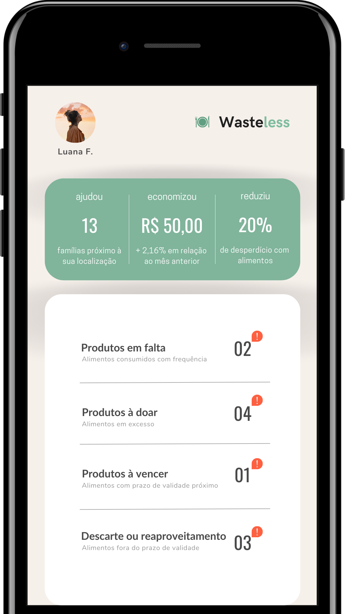
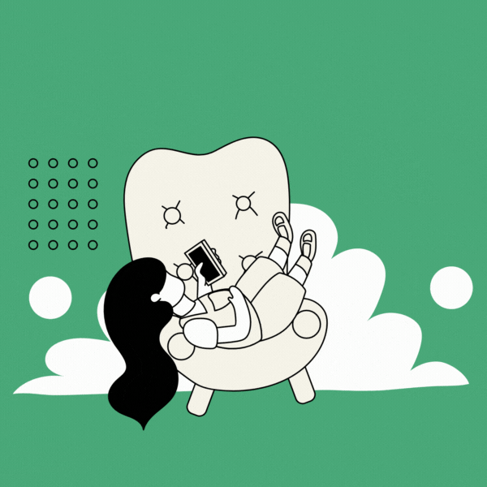

O principal impacto positivo desse aplicativo é a redução do desperdício de alimentos em casa. Isso pode ajudar a diminuir a demanda por alimentos, reduzir a pressão sobre os recursos naturais e mitigar os impactos ambientais do desperdício de alimentos.
O que é o Wasteless?
Se alimentar de forma inteligente
Wasteless é um aplicativo que ajuda a sociedade reduzir o desperdício de alimentos em seu meio.


O aplicativo
A plataforma permitirá que os usuários gerenciem melhor seus alimentos, minimizando o desperdício e economizando dinheiro, além de destinar alimentos que não serão consumidos para instituições de caridade ou pessoas que precisam.
Controle a frequência de consumo de alimentos com boas práticas. Com esse aplicativo ficará mais fácil saber o que é preciso comprar com base na sua lista de compras, sem correr o risco armazenar alimentos que não serão consumidos além de ser alertado quando um insumo estiver em falta.
Baixe o aplicativo
Aplicativo que vai além de um simples controle de estoque, ele será um guia de como lidar com os alimentos no dia a dia, além de mudar a vida de famílias que passam fome.



Principais Impactos
Ao evitar o desperdício de alimentos, os usuários podem economizar dinheiro ao comprar apenas o necessário e aproveitar melhor os alimentos que já possuem. Isso pode ajudar a melhorar a qualidade de vida dos usuários e reduzir os gastos com alimentação.
O aplicativo pode ajudar a promover um consumo mais consciente e sustentável, ao fornecer dicas e ferramentas úteis para evitar o desperdício de alimentos. Isso pode incentivar os usuários a repensarem seus hábitos de consumo e a adotarem práticas mais sustentáveis em seu dia a dia.
A redução do desperdício de alimentos pode contribuir para a segurança alimentar, ao evitar a perda de alimentos que poderiam ser direcionados para pessoas em situação de vulnerabilidade ou com dificuldades de acesso a alimentos.
O desperdício de alimentos contribui para a emissão de gases de efeito estufa e para a poluição do solo e da água. Ou seja, o aplicativo pode ajudar a mitigar esses impactos ambientais e promover uma cultura de consumo mais sustentável.
Com um aplicativo específico para o gerenciamento do desperdício de alimentos, os usuários podem ter acesso a dicas, receitas e ferramentas úteis para aproveitar melhor os alimentos e evitar o desperdício, tornando o processo mais fácil e conveniente.
Quem Somos
A história da TechShe começa com um grupo de amigas que se conheceram na faculdade de engenharia de
software. Eles compartilhavam o mesmo entusiasmo por tecnologia e sempre discutiam ideias sobre como
poderiam aplicar seus conhecimentos para criar soluções inovadoras. Após se formarem, decidiram
começar uma empresa juntas.
No início, a TechShe era uma pequena startup que trabalhava em projetos de desenvolvimento de
software para empresas locais. Mas logo perceberam que havia uma grande demanda por soluções de
tecnologia mais avançadas e decidiram se concentrar em pesquisa e desenvolvimento de produtos
próprios.
O primeiro grande sucesso da empresa foi um software de inteligência artificial que auxiliava as
empresas a gerenciar seus dados e a tomar decisões mais eficientes.
O produto foi bem recebido no mercado e rapidamente se tornou um dos mais procurados no setor. Com o
sucesso do primeiro produto, a TechShe decidiu expandir seus negócios para outras áreas, como
desenvolvimento de aplicativos móveis e soluções com ênfase em sustentabilidade e empoderamento
feminino.
A empresa é conhecida por sua cultura de inovação, onde todos os funcionários são incentivados a
pensar fora da caixa e a apresentar ideias criativas.
A TechShe é uma empresa dinâmica e em constante evolução, sempre buscando novas maneiras de aplicar
a tecnologia para melhorar a vida das pessoas.
Luana Figueiredo
Cofundadora e CTO
Angélica Oliveira
Cofundadora e CEO
Gabriela Rocha
CFO